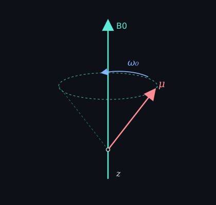

Continuing the 2021 class note, after gyromagnetic ratio: μ = γI.
In the classical vector picture, a magnetic moment μ in a static field B0 experiences a torque, μ × B0. Because μ is associated with angular momentum, that torque changes the angular momentum's direction and makes the moment precess around the field. It does not simply pull the moment into alignment.
Ignoring relaxation, the motion traces a cone around B0 without changing its opening angle. For a positive γ, such as that of 1H, the usual expression for the precession rate is:
ω₀ = γ B₀
ω₀ is the angular frequency in radians per second. At the scanner, the frequency is usually given as ν₀ = γ B₀ / 2π. For 1H, γ/2π ≈ 42.58 MHz/T, giving about 64 MHz at 1.5 T and 128 MHz at 3 T. Changing the nucleus changes γ and therefore its frequency: at the same B0, 13C and 1H do not precess at the same rate. NIST: proton gyromagnetic ratio.

This is where the individual magnetic moment and the bulk magnetization M need to be separated. M is the sum of the moments per unit volume. At thermal equilibrium it points along B0, with no net transverse component, so it is stationary even though the individual-spin dynamics are described by the Larmor frequency. After RF excitation creates transverse magnetization, that component precesses and can produce a detectable signal. MIT: rotating frame and equilibrium, p. 1.
The receiver detects a voltage induced by the changing magnetic flux from the rotating transverse magnetization. Precession explains the rotation; relaxation explains the return to equilibrium. MIT: basic MR principles.
Next note: RF pulse / resonance.
中文
接續 2021 年的課間筆記，上一則談的是旋磁比：μ = γI。
用古典向量的圖像來看，把磁矩 μ 放進靜磁場 B0 後，它會受到 μ × B0 的力矩（torque）；由於磁矩與角動量相連，力矩會改變角動量的方向，讓磁矩繞著磁場進動，而不是直接把它拉到與磁場對齊。
先不考慮弛緩時，這個運動會在 B0 周圍形成圓錐，開口角度維持不變；對 1H 這類 γ 為正的原子核，進動角頻率通常寫成：
ω₀ = γ B₀
ω₀ 是角頻率，單位為每秒弧度；掃描器上通常報的是頻率 ν₀ = γ B₀ / 2π。1H 的 γ/2π 約為 42.58 MHz/T，因此在 1.5 T 時約為 64 MHz，在 3 T 時約為 128 MHz；換了原子核，γ 與進動頻率也會跟著改變，所以同一個 B0 下，13C 與 1H 的進動頻率並不相同。NIST：質子旋磁比。
這裡要把個別磁矩與整體的磁化向量 M 分開理解，M 是單位體積內許多磁矩的向量總和。在熱平衡時，它沿著 B0，整體橫向分量為零，因此 M 本身是靜止的；不能因為個別自旋以拉莫爾頻率演化，就說平衡狀態的 M 已經在繞圈。RF 激發建立橫向磁化後，這個分量才會進動並形成可偵測的訊號。MIT：旋轉座標與熱平衡，第 1 頁。
接收線圈偵測的是旋轉中橫向磁化造成的磁通變化，並由此產生感應電壓；進動解釋旋轉的過程，回到熱平衡則還要由後面的弛緩來說明。MIT：磁共振基本原理。
下一則：射頻脈衝／共振。